Play the game · Guide and evidence · PR #12
Nine improvements merged · 08 deferred · Walking ready for playtest · 36,219 native checks
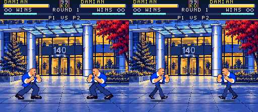
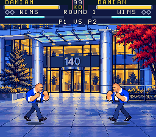
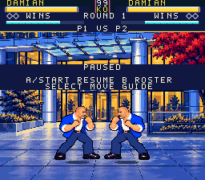
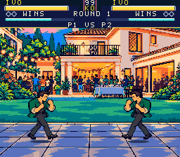
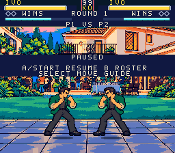
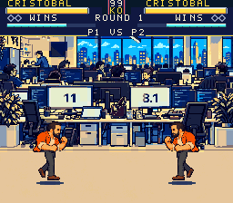
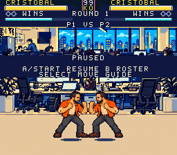
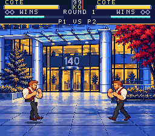
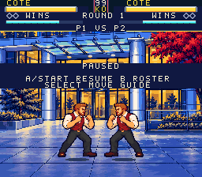
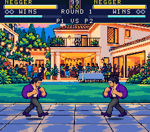
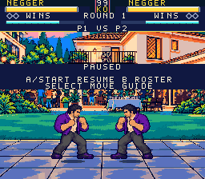
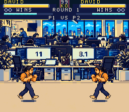
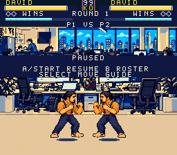
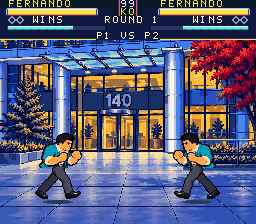
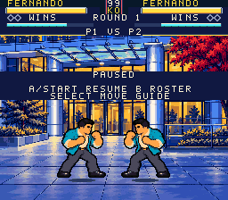
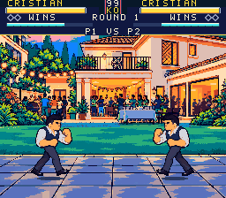
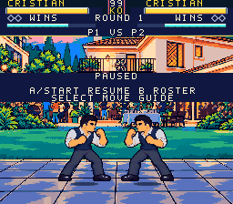
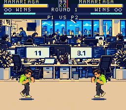
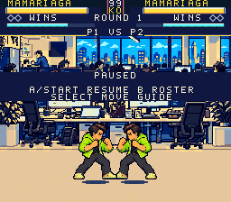
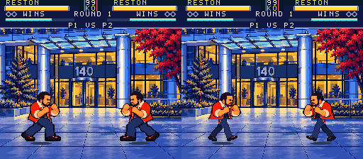
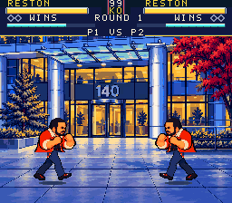
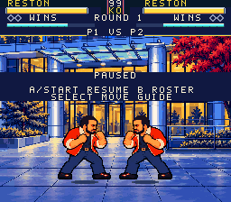
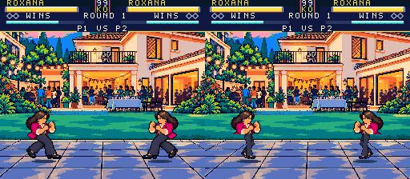
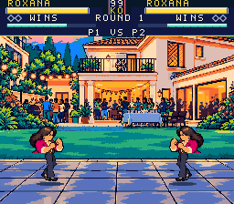
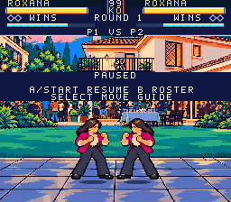
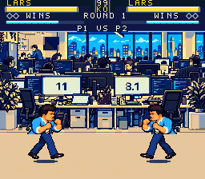
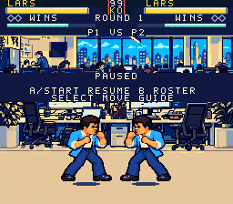
Local multiplayer was already supported; both ports are verified.
P1: arrows · A/S punch · Z/X kick
P2: I/J/K/L · numpad 7/8 punch · numpad 1/2 kick
For controllers, map Joypad 1 and Joypad 2 in Snes9x Input Configuration.